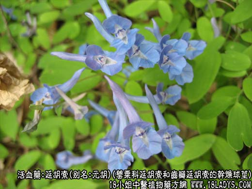
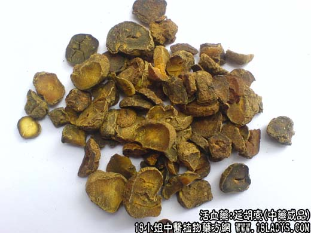
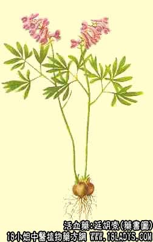

本品为常用中药。始载《开宝本草》。
别名：玄胡索、元胡。
来源：为罂粟科多年生草本植物延胡索和齿瓣延胡索的干燥球茎。多为栽培。
产地：主产于浙江的东阳、缙阳、永康（为浙江特产药材之一）。近年江苏的南通及上海、湖北等地已引种成功。吉林、辽宁、河北有野生。
性状鉴别：球茎呈不规则的扁球形，直径0.5～2厘米。表面灰黄色至黄棕色，多有细皱纹或略平滑，多数上端凹陷，有茎痕，底部有3～5个小突起，中央稍凹下，呈脐状。质坚脆。横断面金黄色至棕黄色，角质样（加工时煮过），有腊样光泽、气微，味苦。以个大、色黄、皮细、质坚，饱满，断面金黄色者为佳。
主要成分：含15种生物硷。据目前所知，其中较重要的是延胡索乙素、丑素和甲素。延胡索乙素已制成片剂作为止痛药供应。延胡索醋炒后可使其生物碱在水中溶解度提高。
功效与作用：活血、理气、止痛，其作用为：
1、镇痛。能显著提高痛阈，延胡索乙素的镇痛作用较强，丑素其次。粉剂和醇制浸膏的作用优于煎剂。延胡索乙素对轻度痉挛性疼痛的有效率达致于度冷丁相当。
2、镇静。有效成分分为乙素、丑素。乙素作用较强，并有催眠作用。
3、解痉。乙素、丑素能使肌肉松弛，与前人观察到的延胡索”能治肢体拘挛“的结论相符。乙素作用较强，且在抗惊厥方面与苯妥英钠略有协同作用。
此外，还有中枢性镇吐作用。延胡索乙素对大鼠ACTH分泌活动有刺激作用。
炮制：醋炒，捣碎用。
性味：辛、苦、温。
归经：入心包、肝、脾、肺经。
功能：活血、理气、止痛。
主治：气滞血瘀之诸痛，胃脘痛、胸胁痛，腹痛，痛经，疝痛等症。
临床应用：为止痛常用药，前人推崇为”专治一身上下诸痛“。无论头痛、胸腹痛、胁痛、月经痛、关节痛、跌打损伤痛，凡属气血凝滞引起，属纯痛性质的，都可应用，收效速而性不燥烈，止痛效果比较确实。临床较多多用于治疗妇科经痛，配当归、白芍（或赤芍），作为治疗各型经痛的基本药物，再随证配伍，代表方为延胡索散，或与八珍汤相配。
治胁痛、肝区痛，配川楝子，或配枳壳、香附、郁金等；治胃脘痛配高良姜、香附等（单用延胡索乙素治胃溃疡痛亦有效），身痛配秦艽等。
使用注意：用于虚证明最好与补益气血药同用。
用量：3～9g，虽可入煎剂，但以粉剂和醇制浸膏效果较好。醋制剂生物硷总含量较高，前人经验亦认为醋炒后活血效果较好，但醋制浸膏毒性较大，不宜用。
处方举例：延胡索散：（延胡索6g，当归9g，炒蒲黄3g，川芎4.5g，乳香6g，没药6g，肉桂3g，焗），水煎服。
注：延胡索在商品上，以往规格繁多，根据卫生、商业两部颁发《五十四中药材商品规格试地标准》简化为每两45粒以内为一等，每两45粒以外者为二等。